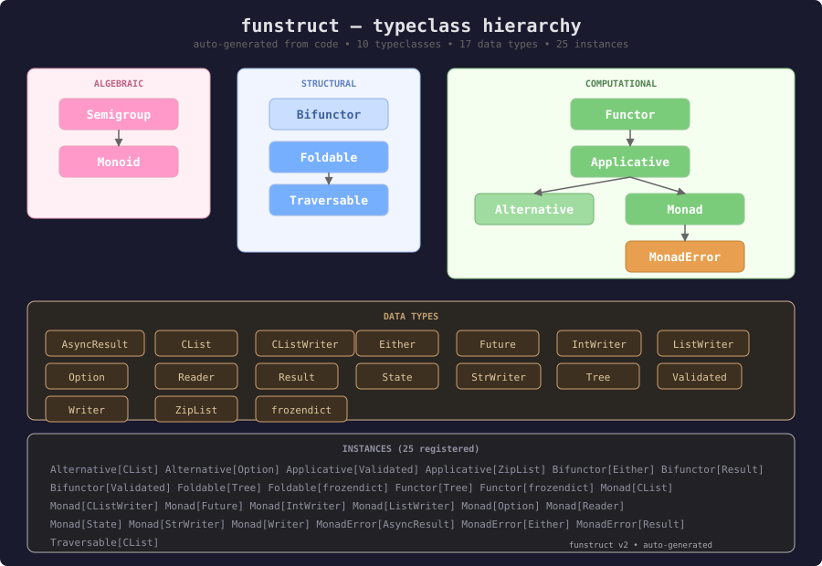

funstruct
A functional programming library for Python. Typeclasses, collections, monads, algebraic data types, etc.
Heavily influenced by the Haskell and Scala languages, as well Scalaz and Cats.
Install
pip install funstruct || uv add funstruct
Functional Primer
Principles
Immutability — all funstruct data types are immutable. Some(10).map(f)
returns a NEW Some(20), never modifies the original. frozendict.put(k, v)
returns a new dict. This eliminates shared-state bugs and makes code predictable.
Pure functions — functions that always return the same output for the
same input, with no side effects. map, bind, fold are pure.
Side effects (@Try, @TryAsync, AsyncResult) are pushed to boundaries.
Python can't enforce this, so it remains a recommendation. See below about IO
type.
Composition over control flow — instead of if/else chains and
try/except blocks, compose operations with map, bind, and do.
# Imperative (control flow)
user = get_user(id)
if user is None:
return None
email = get_email(user)
if email is None:
return None
return email.upper()
# Functional (composition)
get_user(id).bind(get_email).map(str.upper)
Separation of data and behavior — in OOP, classes bundle data and methods together. In FP, they're separate: data is inert, behavior is defined externally. This means you can add new operations to existing types without modifying them.
# OOP: data + behavior bundled in the class
class User:
def __init__(self, name, age): ...
def validate(self): ... # behavior ON the data
def save(self): ... # more behavior ON the data
def to_json(self): ... # yet more behavior ON the data
# FP: data is plain, behavior is external via typeclasses
@dataclass(frozen=True)
class User:
name: str
age: int
# no methods — just data
# Behavior defined separately, works across ANY type with an instance
jsonify(user) # via JSONWrite[User]
summon(Monad, Result).map(Ok(user), f) # via Monad[Result]
Algebraic data types (ADTs) — types with a fixed set of variants:
Option = Some | Nothing, Result = Ok | Err, Either = Right | Left.
Pattern matching exhaustively handles all cases.
Architecture
Three distinct class hierarchies, connected by instances:
BaseTypeclass DataType
(abstract capabilities) (concrete data)
───────────────── ────────────────
Semigroup → Monoid Option[A]
Foldable → Traversable Either[E, A]
Bifunctor Result[A], AsyncResult[A]
Functor → Applicative CList[A], Tree[A]
├→ Alternative frozendict[K, V]
└→ Monad → MonadError State[S, A], Reader[R, A]
Writer[W, A], Future[A]
Validated[E, A], ZipList[A]
INSTANCES (connect them)
────────────────────────
_OptionMonad(Monad, for_type=Option) — auto-registered
_ResultMonadError(MonadError, for_type=Result)
_CListAlternative(Alternative, for_type=CList)
_EitherBifunctor(Bifunctor, for_type=Either)
...
BaseTypeclass— root of all typeclasses. Provides AutoRegister (for_type=keyword for automatic instance registration).DataType— root of all data types. Provides TypeConstructor (auto_type_constructordetection) and DotNotation (dot-syntax dispatch).- Instances — separate classes that implement a typeclass for a data type. Only implement primitives (pure + bind); derived ops (map, ap) come from the typeclass hierarchy.

Diagrams
Semigroup — associative combine (+ being the canonical 'combine' operation)
A ─┐
├──( + )──> A
A ─┘
Monoid — semigroup with an identity element
A ─┐
├──( + )──> A (+ identity = A)
A ─┘
Functor — transform the value inside a context
F[A] ---( f: A -> B )---> F[B]
Applicative — apply a function in context to a value in context
F[A → B] ─┐
├──ap──> F[B]
F[A] ──────┘
Monad — sequence computations that produce new contexts
F[A] ---( f: A -> F[B] )---> F[B]
Heavily influenced by Scalaz and Cats.
# Python 3.12+ syntax for clarity. Library supports ≥3.10.
# In v2, typeclasses are INSTANCE classes (self = instance, fa = data).
# Data types extend DataType, NOT typeclasses.
# ── Value-level typeclasses (instantiated per use) ──
@dataclass(frozen=True)
class Semigroup[A]:
typ: type
combine: Callable[[A, A], A]
@dataclass(frozen=True)
class Monoid[A](Semigroup[A]):
empty: A
# ── Typeclass hierarchy (instance classes) ──
# F is the type constructor (Option, Result, etc.)
# A, B are value types; E is the error type
# pseudo-code type signatures; see exact impls
class Functor[F](BaseTypeclass):
def map(self, fa: F[A], f: Callable[[A], B]) -> F[B]: ...
class Applicative[F](Functor[F]):
def pure(self, value: A) -> F[A]: ...
def ap(self, ff: F[Callable[[A], B]], fa: F[A]) -> F[B]: ...
def map(self, fa: F[A], f: Callable[[A], B]) -> F[B]: ... # derived
def map2(self, fa: F[A], fb: F[B], f: Callable[[A, B], C]) -> F[C]: ...
def product(self, fa: F[A], fb: F[B]) -> F[tuple[A, B]]: ...
class Alternative[F](Applicative[F]):
def empty(self) -> F[A]: ...
def or_else(self, fa: F[A], fb: F[A]) -> F[A]: ...
class Monad[F](Applicative[F]):
def bind(self, fa: F[A], f: Callable[[A], F[B]]) -> F[B]: ...
def map(self, fa: F[A], f: Callable[[A], B]) -> F[B]: ... # derived
def ap(self, ff: F[Callable[[A], B]], fa: F[A]) -> F[B]: ... # derived
class MonadError[F, E](Monad[F]):
def raise_error(self, error: E) -> F[A]: ...
def handle_error_with(self, fa: F[A], f: Callable[[E], F[A]]) -> F[A]: ...
class Bifunctor[F](BaseTypeclass):
def bimap(self, fa: F[A, B], f: Callable[[A], C], g: Callable[[B], D]) -> F[C, D]: ...
def left_map(self, fa: F[A, B], f: Callable[[A], C]) -> F[C, B]: ... # derived
class Foldable[F](BaseTypeclass):
def fold_left(self, fa: F[A], acc: B, f: Callable[[B, A], B]) -> B: ...
def fold_right(self, fa: F[A], acc: B, f: Callable[[A, B], B]) -> B: ...
class Traversable[F](Foldable[F]):
def traverse(self, fa: F[A], f: Callable[[A], G[B]], G: Applicative) -> G[F[B]]: ...
def sequence(self, fga: F[G[A]], G: Applicative) -> G[F[A]]: ... # derived
# ── Data types (extend DataType, not typeclasses) ──
class Option(DataType, Generic[A]): ... # Some(value) | Nothing()
class Either(DataType, Generic[E, A]): ... # Right(value) | Left(error)
class Result(DataType, Generic[A]): ... # Ok(value) | Err(exception)
# ── Instances (connect typeclasses to data types) ──
class _OptionMonad(Monad, for_type=Option):
def pure(self, value: A) -> Option[A]:
return Some(value)
def bind(self, fa: Option[A], f: Callable[[A], Option[B]]) -> Option[B]:
match fa:
case Some(v): return f(v)
case Nothing(): return fa
# map, ap, product, then, map2 — all inherited from Monad hierarchy
# ── Experimental (monad transformers) ──
class MonadTransformer(ABC):
def bind(self, fa: MT[F, A], f: Callable[[A], MT[F, B]]) -> MT[F, B]: ...
def map(self, fa: MT[F, A], f: Callable[[A], B]) -> MT[F, B]: ...
def pure(cls, value: A, monad: type[F]) -> MT[F, A]: ...
def lift_f(cls, inner: F[A]) -> MT[F, A]: ...
Instances (which data types implement which typeclasses)
| Data Type | Typeclasses |
|---|---|
Option[A] |
Monad, Alternative |
Either[E, A] |
MonadError, Bifunctor |
Result[A] |
MonadError, Bifunctor |
AsyncResult[A] |
MonadError, Bifunctor |
CList[A] |
Monad, Traversable, Alternative |
Tree[A] |
Functor, Foldable |
frozendict[K, V] |
Functor, Foldable |
Validated[E, A] |
Applicative, Bifunctor |
ZipList[A] |
Applicative |
State[S, A] |
Monad |
Reader[R, A] |
Monad |
Writer[W, A] |
Monad |
Future[A] |
Monad |
Data Types
| Type | What it models |
|---|---|
Option[A] |
Value might not exist |
Either[E, A] |
Value or typed error |
Result[A] |
Computation that can fail (Ok/Err) + @Try |
AsyncResult[A] |
Async computation that can fail + @TryAsync |
State[S, A] |
Stateful computation |
Reader[Ctx, A] |
Shared environment |
Writer[W, A] |
Accumulated output |
Validated[E, A] |
Error accumulation (applicative, not monad) |
Future[A] |
Lazy async computation |
CList[A] |
Persistent singly-linked list |
Tree[A] |
Immutable binary tree (functor only) |
frozendict[K, V] |
Persistent HAMT dictionary |
Laws
Every implementation must satisfy these mathematical laws:
Semigroup
- Associativity:
(a + b) + c == a + (b + c)
Monoid
- Left identity:
empty + a == a - Right identity:
a + empty == a
Functor
- Identity:
fa.map(id) == fa - Composition:
fa.map(f).map(g) == fa.map(g ∘ f)
Applicative
- Identity:
pure(id).ap(v) == v - Homomorphism:
pure(f).ap(pure(x)) == pure(f(x)) - Interchange:
u.ap(pure(y)) == pure(λf. f(y)).ap(u) - Composition:
pure(∘).ap(u).ap(v).ap(w) == u.ap(v.ap(w)) - Type preservation:
pure,map,apreturn the correct concrete type
Monad
- Left identity:
pure(a).bind(f) == f(a) - Right identity:
m.bind(pure) == m - Associativity:
m.bind(f).bind(g) == m.bind(λx. f(x).bind(g))
Alternative
- Right identity:
fa.or_else(empty) == fa - Left identity:
empty.or_else(fa) == fa - Associativity:
a.or_else(b).or_else(c) == a.or_else(b.or_else(c))
Bifunctor
- Identity:
bimap(id, id) == id - Composition:
bimap(f1 ∘ f2, g1 ∘ g2) == bimap(f1, g1) ∘ bimap(f2, g2)
Traversable
- Identity:
traverse(fa, pure, G) == pure(fa) - Composition:
traverse(fa, f ∘ g, G) == traverse(traverse(fa, g, G), f, H)
Syntax notes
Dot syntax — the default, for everyday code:
from funstruct.monad.option import Some, Nothing
from funstruct.monad.result import Ok, Err
Some(10).map(lambda x: x * 2).bind(lambda x: Some(x + 1)) # Some(21)
Ok(10).map(str) # Ok('10')
Nothing().map(lambda x: x + 1) # Nothing()
**** dot notation is syntatic sugar over the following...
Typeclass instances — for generic, effect-polymorphic programs:
from funstruct.typeclasses import Monad, MonadError, summon
from funstruct.monad.option import Option, Some
from funstruct.monad.result import Result, Ok, Err
# F: Monad = the typeclass instance (constraint / trait bound)
# fa: F[A] = a value in the monadic context (Some(21), Ok(21), etc.)
def double(F: Monad, fa):
return F.map(fa, lambda x: x * 2)
double(summon(Monad, Option), Some(21)) # Some(42)
double(summon(Monad, Result), Ok(21)) # Ok(42)
# F: MonadError adds raise_error + handle_error_with
def safe_divide(F: MonadError, a: float, b: float):
if b == 0:
return F.raise_error(ValueError("division by zero"))
return F.pure(a / b)
safe_divide(summon(MonadError, Result), 10, 2) # Ok(5.0)
safe_divide(summon(MonadError, Result), 10, 0) # Err(ValueError(...))
Data types are plain — they don't inherit from typeclasses. Typeclass
instances are separate classes that implement the operations. summon
resolves the right instance from a registry. Dot syntax is sugar on
top — Some(10).map(f) delegates to summon(Monad, Option).map(Some(10), f)
internally.
Why no IO type?
In Haskell, IO exists because the language is purely functional — there is
no way to perform side effects without wrapping them in the IO monad. The
type system enforces purity: if a function doesn't return IO, it cannot
touch the network, filesystem, or mutable state.
Python has no such constraint. Any function can perform side effects at any
time. An IO wrapper in Python would be:
- Unenforceable — nothing stops you from doing I/O outside the wrapper.
The type system can't prevent
print()in a "pure" function. - Purely ceremonial — it adds a wrapper you must manually construct and unwrap, but provides no guarantee. It's a comment dressed as a type.
- Redundant with async — Python's
async/awaitalready separates "description of a computation" from "execution of that computation," which is most of whatIOprovides in Haskell.
Instead, funstruct provides:
Either[E, A]/Result[A]— for operations that might failFuture[A]/AsyncResult[A]— for async operations (with or without error handling)@Try/@TryAsync— for wrapping exception-throwing code at boundaries
These give you the composition benefits of monadic pipelines where they matter (error handling, async sequencing) without pretending Python is something it isn't.
Higher-kinded types
In Haskell and Scala, higher-kinded types (HKTs) let you abstract over
type constructors — writing one generic sequence that works for any
Traversable + Applicative combination.
Python's type system does not support HKTs natively. funstruct achieves the same effect at runtime through the typeclass instance pattern:
- Type constructors are represented by the class itself (
Option,Result,Either). Each data type sets_type_constructorso variants resolve to their base:tc_of(Some(42))→Option. - Typeclass resolution via
summon(Monad, Option)returns the registered instance, just like Scala'ssummon[Monad[Option]]. - Generic functions use the instance directly:
def double(F: Monad, fa): return F.map(fa, lambda x: x * 2) - Dot syntax delegates to summon internally:
Some(10).map(f)→summon(Functor, Option).map(Some(10), f)
This gives funstruct Haskell-style typeclass resolution and Scala-style
tagless final — without HKT encoding tricks, metaclass magic, or
compiler plugins. The tradeoff: trait bounds are enforced at runtime
(via summon), not at compile time.
Experimental
Experimental modules live in funstruct.experimental. APIs may change.
Monad Transformers
from funstruct.experimental.monadtransformer import (
ReaderT, StateT, EitherT, OptionT, WriterT,
)
Transformers combine effects by wrapping one monad inside another.
For most use cases, plain monads with do-notation and fold are
sufficient. Reach for transformers only when you need to combine
multiple effects in a single pipeline.
ReaderT[F, Ctx, A] = Ctx -> F[A] (environment + F's effects)
StateT[F, S, A] = S -> F[(S, A)] (state + F's effects)
EitherT[F, E, A] = F[Either[E, A]] (errors + F's effects)
OptionT[F, A] = F[Option[A]] (absence + F's effects)
WriterT[F, W, A] = F[(A, W)] (output + F's effects)
Optics (Lenses)
from funstruct.experimental.optics import Lens, at
from funstruct.collections.frozendict import frozendict
Lenses let you read and update deeply nested immutable structures without manually rebuilding the path at every level.
config = frozendict({
"app": {
"users": {
"alice": {"email": "alice@old.com", "role": "admin"},
},
"settings": {"version": 2},
},
})
email_lens = at("app") >> at("users") >> at("alice") >> at("email")
email_lens.get(config) # "alice@old.com"
email_lens.set(config, "alice@new.com") # rebuilds the path
email_lens.modify(config, str.upper) # "ALICE@OLD.COM"
version_lens = at("app") >> at("settings") >> at("version")
version_lens.modify(config, lambda v: v + 1) # bumps to 3
Roadmap
- Interactive demos — browser-runnable examples via PyScript/Pyodide. Edit and run funstruct code directly in the docs.
- Documentation site — expanded static site (Astro/Next.js/etc) with guides, interactive demos, and API reference.
- Functional collections — persistent queue, deque, red-black tree, persistent stack, heap
- Native collections (Rust/PyO3) — Rust-backed CList, frozendict via
funstruct[native]. - Typeclass derivation — auto-generate Functor/Foldable instances from dataclass structure.
- Parser combinators — monadic parser library (
funstruct.experimental.parsing). - Python 3.12+ minimum — rewrite type signatures using
type X[A, B] = ...aliases andclass Foo[A]:syntax. - Free monad — build program ASTs, interpret with different backends.
- Effects system — algebraic effects as an alternative to monad transformer stacks.
- Stream — infinite streams, lazy evaluation.
- Pydantic integration — more native integration with BaseModel, frozendict, lens, validated, etc